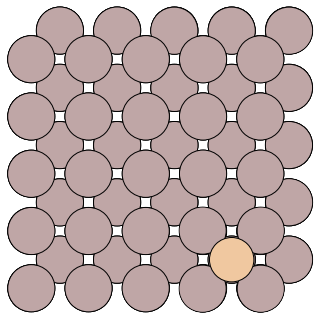

Running a Parallel Replica Job¶
A sample parallel replica simulation can be found in the directory: examples/parallel-replica/. Two input files config.ini and pos.con are required for EON simlution.
The example system is the diffusion of an Al adatom on the Al(100) surface. A snapshot of the system is given below:

The config.ini file will run a parallel replica job with 2 replicas on one local core.
[Main]
job = parallel_replica
temperature = 500 ; temperature of the MD simulations
random_seed = 1024
[Potential]
potential = eam_al ; embedded atom method potential for aluminum
[Communicator]
type = local ; run the client locally
client_path =../../client/client ; $PATH for the client binary
number_of_cpus = 1 ; number of jobs to run locally
num_jobs = 2 ; total number of trajectories to run
[Dynamics]
time_step = 2.0 ; timestep of the MD simulation (in fs)
time = 12000.0 ; total number of MD steps to run
thermostat = andersen ; Andersen thermostat with Verlet algorithm
andersen_alpha = 0.2 ; collision strength in the andersen thermostat
andersen_collision_period = 10.0 ; collision period of andersen thermostat (in fs)
[Parallel Replica]
dephase_time = 200 ; number of steps used to decorrelate the replica trajectories.
state_check_interval = 3000 ; number of steps between quanches to check if a new state is found
state_save_interval = 200 ; number of steps recorded to a buffer array to refine the transition time
post_transition_time = 200 ; number of additional MD steps run after a new state is found
stop_after_transition = false ; flag to stop the job when a new state is found
[Optimizer]
opt_method = cg ; use the conjugate gradient optimizer
converged_force = 0.005 ; stop optimizations when the max force per atom reaches 0.005 eV/A
Now we can run the trajectory by executing the command ../../bin/eon:
$ ../../bin/eon
simulation time is 0.000000e+00
state list path does not exist, creating .//states/
registering results
0 (result) searches processed
time in current state is 0.000000e+00
0 searches in the queue
making 2 searches
job finished in .//jobs/scratch/0_0
job finished in .//jobs/scratch/0_1
2 searches created
Then use “../../bin/eon -n” to register the result:
$ ../../bin/eon -n
simulation time is 0.000000e+00
registering results
found transition with time 8.200e-12
2 (result) searches processed
Average Speedup is 1.000000
time in current state is 0.000000e+00
currently in state 1
0 searches in the queue
making 0 searches
Information from the trajectoy is written in the dynamics.txt file:
step-number reactant-id process-id product-id step-time total-time barrier rate
---------------------------------------------------------------------------------------------------------------
0 0 0 1 8.200000e-12 8.200000e-12 0.000000 0.000000e+00
The first column contains the number of the trajectories which find a transition label the successful searches, in this case all the three searches are successful. The second and fouth column label the reactant and product; Column 5 and Column 6 are the transition time for each success searches and the accumulated simulation time.
Detailed information of the simulation is stored in the folder states. where the geometric and energy of the visited states are stored in the sub-folder labeled as state id. You can find the geometric of the prodcut in states/1/reactant.con/, a snapshot is shown below:

Compared to the reactant geometric, we can tell that the transition we found follows the exchange mechanism.
Parallel Replica with Hyperdynamics¶
You can turn on the hyperdynamics method by adding the following section to your config.ini file:
[Hyperdynamics]
bias_potential=bond_boost ; bond_boost bias potential
bb_boost_atomlist=20,26,50,56,150 ; atoms that are boosted in the bias potential
bb_rcut=3.0 ; boost radius
bb_rmd_time=100.0 ; MD time to obtain the equilibrium configuration
bb_dvmax=0.4 ; magnitude of the bond-boost bias potential
bb_stretch_threshold=0.2 ; defines the bond-boost dividing surface
bb_ds_curvature=0.95 ; curvature near the bond-boost dividing surface, it should be <= 1; a value of 0.9-0.98 is recommended
All other settings and output infomation are as in a regular parallel replica dynamics simulation.